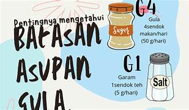

Panduan Pencegahan Obesitas: Strategi 360°
Mencegah obesitas adalah investasi jangka panjang untuk kualitas hidup yang lebih baik, bertenaga, dan percaya diri.
Pilar 1: Nutrisi Seimbang (Isi Piringku)
Bukan tentang mengurangi makan secara drastis, tapi mengatur **proporsi** piringmu.

🥦 Sayuran (1/3 Piring)
Serat tinggi membuat kenyang lebih lama dan menyerap lemak jahat.
🍚 Karbohidrat (1/3 Piring)
Pilih karbohidrat kompleks seperti nasi merah, ubi, atau jagung.
🍗 Protein & Buah (1/3 Piring)
Protein membangun otot, buah memberikan vitamin alami.
2. Batasan GGL (Gula, Garam, Lemak)
Kementerian Kesehatan RI memberikan rumus G4-G1-L5 per orang per hari:
- GULA: 4 Sendok Makan (50 gram)
- GARAM: 1 Sendok Teh (5 gram)
- LEMAK: 5 Sendok Makan Minyak (67 gram)

3. Aktivitas Fisik: Lawan Gaya Hidup Sedentari
Gunakan prinsip BBTT (Baik, Benar, Terukur, Teratur):
- Minimal 30-60 menit setiap hari atau 150 menit seminggu.
- Latihan Kekuatan: Push-up atau squat 2x seminggu untuk meningkatkan metabolisme basal.
- Aktif di Sekolah: Pilih tangga dibanding lift, jalan kaki ke kantin, atau bersepeda.
- Batasi Screen Time: Maksimal 2 jam duduk diam (HP/TV) di luar jam belajar.
4. Pemulihan & Hidrasi Cerdas
💧 Hidrasi Air Putih
Minum 8 gelas air putih sehari. Air putih meningkatkan metabolisme dan membantu tubuh membedakan antara "haus" dan "lapar".
💤 Tidur Berkualitas
Remaja butuh 8-9 jam tidur. Kurang tidur mengacaukan hormon Leptin (kenyang) dan Ghrelin (lapar).
5. Manajemen Psikologis (Mindful Eating)
Jangan makan karena bosan atau stres (Emotional Eating). Praktekkan cara ini:
- Kunyah Perlahan: Butuh 20 menit bagi otak untuk menerima sinyal kenyang.
- Matikan HP saat Makan: Fokus pada rasa makanan agar tidak makan berlebihan.
- Cek Label Gizi: Lihat kolom "Energi Total" dan "Lemak Total" pada kemasan snack sebelum membeli.
Jadilah Pahlawan Bagi Tubuhmu Sendiri!
Mencegah obesitas bukan tentang menjadi kurus, tapi tentang menjadi KUAT, SEHAT, dan BERPRESTASI.
"Sehat itu dimulai dari apa yang ada di piringmu dan apa yang kamu lakukan setelah makan."